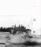

This page reflects my research profile at the time I headed the Information Access research group at the Centrum Wiskunde & Informatica (CWI) (before I moved to Radboud University in 2015). Consider it digital cultural heritage; I have made an effort to replace stale links by working alternatives from the Internet Archive.
The main topics of my research include structured document retrieval and entity ranking, multimedia information retrieval, the application of information retrieval theory to recommendation systems and social media, nearest neighbour search in high dimensional spaces, the integration of information retrieval and database technology, and the evaluation methodology needed in these novel information retrieval application areas. My interests match the introduction of the dataspaces abstraction, although that idea never reached the impact on CS research that it should have had.
September 1st, 2008, I have been appointed Full Professor Multimedia Dataspaces (nl) at Delft University of Technology. May 8th, 2009, I gave my inaugural lecture "Zoektocht op schema". Finally, I am co-founder of CWI spin-off company Spinque.
A separate page is dedicated to my PhD thesis.
At Delft University (in the Multimedia Computing group), I used to teach course IN4144 (Scalable Data Management for) (Data Science), part of the Media and Knowledge Engineering Master's program.
Highlights on my CV include the organization of SIGIR 2007 in Amsterdam, together with Wessel Kraaij, Djoerd Hiemstra, and Maarten de Rijke, and the coordination of the TREC Enterprise Track with Peter Bailey, Nick Craswell, Ian Soboroff and Paul Thomas. At INEX (an evaluation of structured document retrieval, or XML-IR), I have started the entity ranking track.
Former projects include the NWO Open Competition Cirquid, the MultimediaN precursor MIA, and the Senter DMW and Waterland projects. Information about my first steps in research can be found (though rather outdated) at the Mirror Research Page.
Finally, I am member of ACM (SIGMOD and SIGIR), and a board member of the (Dutch) WGI, Vereniging Werkgemeenschap Informatiewetenschap (i.e., Society for Information Science).
